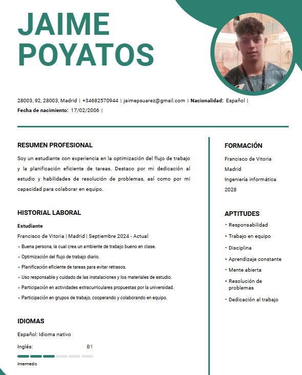

Acerca de mí
Mi nombre es Jaime Poyatos Suárez y estudio en la Francico Vitoria, actualemnte estoy dando clases de conducir para sacarme el carnet, vivo en Madrid con mis padres. Soy un aposionado del deporte, me encanta verlo y tambien jugarlo, mi deporte favorito es el fútbol y mi equipo favorito es el Sevilla Fútbol Club. Practico en especial 2 deportes que son el fútbol y el pádel. Mis amigos y yo hemos formado un equipo de fútbol y jugamos todos los domingos en una liga municipal.
Mi curriculum vitae: 
Fotos mías:


Redes:
instagram x ← Volver a la página principal